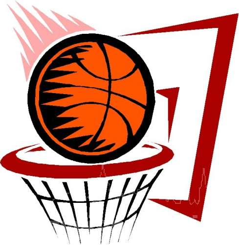
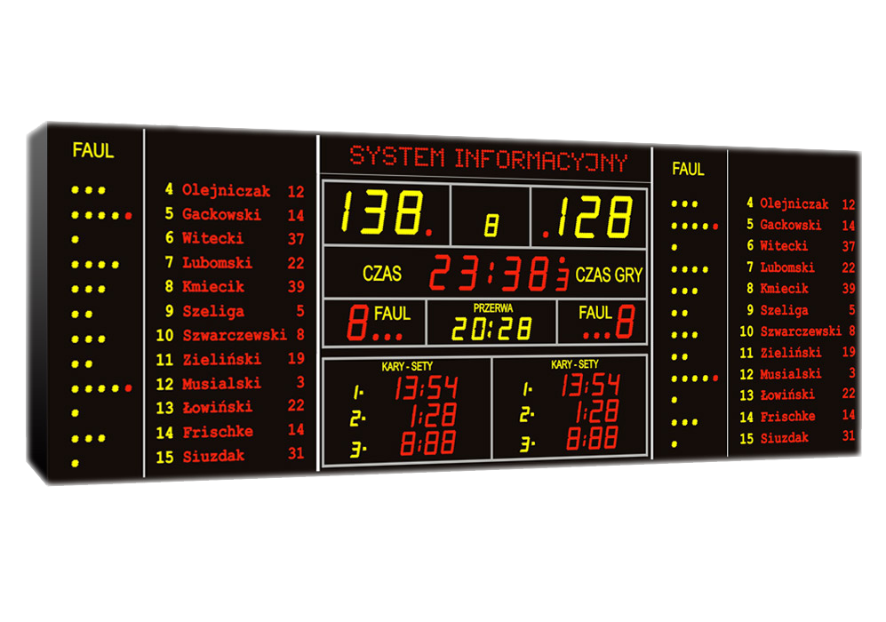
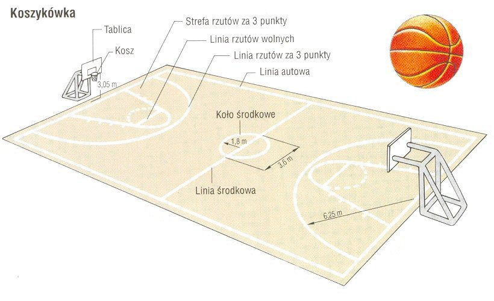
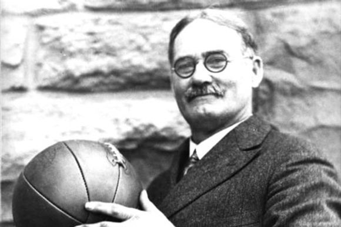

Koszykówka
Tutaj reklama będzie

Dyscyplina sportu drużynowego, w której dwie pięcioosobowe drużyny grają przeciwko sobie próbując zdobyć punkty umieszczając piłkę w koszu.

Mecz składa się z czterech kwart po dziesięć minut.
Przerwy dwu minutowe maja miejsce pomiędzy każdą kwartą .

Boisko do gry twarda powierzchnia wolna od przeszkód, o wymiarach 28 m długości i 15 m szerokości, mierzonych od wewnętrznych krawędzi linii ograniczających boisko.

Koszykówka powstała 21 grudnia 1891 roku w Springfield w stanie Massachusetts, przez nauczyciela W-F Jamesa Naismith.Aby studencicollege'u mogli uprawiać ją zimą w sali.
Moje hobby. Copyright © Wszystkie prawa zastrzeżone